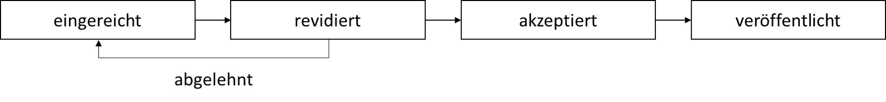

3. Forschungsergebnisse veröffentlichen

Pre-Prints
Die Version eines Manuskriptes, die noch nicht von einer Zeitschrift begutachtet wurde (bzw. zur Publikation abgelehnt wurde) heißt Pre-Print und sie zu veröffentlichen hat zahlreiche Vorteile für Forschenden.
Worum geht’s?
Bei den meisten Verlagen treten Autor*innen im Publikations-Prozess die Rechte an ihren Manuskripten ab. In Extremfällen können Verlage Autor*innen verbieten, Manuskripte einzureichen, die bereits als Pre-Prints verfügbar sind (z.B. um blind peer review garantieren zu können). Forschende sollten Gebrauch von Ihren Rechten machen, Pre-Prints zu veröffentlichen. Wie die Policy je Zeitschrift aussieht, kann hier nachgelesen werden. Pre-Prints zu veröffentlichen hat folgende Vorteile:
Gute Wissenschaftliche Praxis: Forschung ist frei verfügbar und der Fortschritt beschleunigt
Karriere: Forschungs-Outputs sind bereits sichtbar im Lebenslauf und auf Bewerbungen; Pre-Prints können zitiert und kommentiert werden
Besserer Schutz vor Ideenklau: Über ein Pre-Print ist früh und transparent nachverfolgbar, wer wann eine Idee hat. Das ist bei blind peer review, was bis zu mehrere Jahre dauern kann, nicht der Fall.
Ein Manuskript für einen wissenschaftlichen Artikel oder ein Buch durchläuft von der ersten Version bis zur Veröffentlichung viele Versionen. Alle Varianten eines Manuskript, die nicht von einer Zeitschrift akzeptiert und darüber publiziert sind, heißen Pre-Prints. Im Gegensatz dazu werden publizierte Artikel auch Post-Prints genannt.

Weiterführende Informationen
Hinweise zum Zweitveröffentlichungsrecht der HU Berlin: https://www.ub.hu-berlin.de/de/forschen-publizieren/open-access/rechtliches/zweitveroeffentlichungsrecht
Pre-Print Server durchsuchen oder auf ihnen veröffentlichen: https://osf.io/preprints
Tool zum Prüfen der Pre-Print Policy nach Journal: https://v2.sherpa.ac.uk/romeo/search.html
Open Access
Forschung, die als Open Access publiziert ist, ist kostenlos und online verfügbar.
Worum geht’s?
Mit Open Access meinen Forschende in Bezug auf veröffentlichte Forschungsartikel oder Bücher, dass sie kostenlos lesbar sind. Je nach Zeitschrift unterscheidet sich dabei die jeweilige Regelung in Bezug darauf, ob Artikel immer/nur aus dem Universitätsnetzwerk/gar nicht frei abrufbar sind, ob es sich um die eingereichte/akzeptierte/veröffentlichte Version des Manuskriptes handelt und ob die Open Access Publikation kostenlos oder nicht ist.
Open Access Modelle bei wissenschaftlichen Zeitschriften (siehe auch AG Openness)
| Typ | Regelung | Bewertung1 |
|---|---|---|
| Diamond Open Access | Alle Publikationen sind kostenlos lesbar, es fallen keine Publikationskosten (Author Processing Charges) an | positiv |
| Gold Open Access | Alle Publikationen sind kostenlos lesbar, es fallen Publikationskosten (Author Processing Charges, APC) an | positiv bei transparenter Begründung der APCs und gerechtfertigter Höhe |
| Hybrid | Die Zeitschrift hat ein Subskriptionsmodell (d.h. die Universität zahlt jährliche Kosten dafür, dass Universitätsangehörige Zugriff auf die Literatur haben). Gegen eine Gebühr werden die veröffentlichten Artikel öffentlich zugänglich gemacht, sie sind also auch nach Ablauf der Subskription oder für andere Institutionen und Privatpersonen kostenlos lesbar. | negativ wegen “Double Dipping” - Universitäten zahlen dann doppelt: für Subskription + Open Access |
| Moving Wall | Die Zeitschrift hat ein Subkriptionsmodell. Nach Ablauf einer festgelegten Frist (üblicherweise zwischen 6 und 48 Monaten) ist der Artikel frei verfügbar. | negativ: Forschung wird verlangsamt bzw. vor allem finanziell schwache Personen/Institutionen/Länder werden benachteiligt |
| Promotional | Zur Bewerbung der Zeitschrift werden einzelne ausgewählte Publikationen frei verfügbar veröffentlicht. | negativ: Open Washing (Zeitschrift ist nicht offen und verwendet Modell nur, um sich selbst zu bewerben) |
| Green | Unabhängig von der Zeitschrift: Autor*innen machen von ihrem Zweitveröffentlichungsrecht gebraucht und laden das Manuskript im Internet hoch. Je nach Veröffentlichungsvertrag können sie das auf ihrer privaten Homepage, einem institutionellen Repositorium, oder auch auf Pre-Print Servern tun. Regelungen dazu können je Zeitschrift hier nachgelesen werden. | positiv: Forschung ist ohne Kosten und mit geringem Aufwand frei verfügbar |
Weiterführende Informationen
Open Access Strategie der Hochschulen in NRW: https://zenodo.org/record/8322048
Open Access Seiten der Universität Münster: https://www.uni-muenster.de/Publizieren/open-access/
Tool zum Prüfen, welche Regelungen eine Zeitschrift zu Open Access und Pre-Prints hat: https://v2.sherpa.ac.uk/romeo/search.html
Vorträge und Workshops
Das CERes veranstaltet jedes Semester gemeinsam mit der ULB einen Workshop zu Open Access publizieren (abwechselnd auf Deutsch und Englisch), aktuelle Workshopangebote sind online verfügbar: https://www.uni-muenster.de/CERes/qualifizierung/workshops/index.html
Film zu den Nachteilen der aktuellen Publikationskultur: paywallthemovie.com
Pre-Print Review
Verschiedene Forschenden-Communities organisieren Begutachtungsprozess von Pre-Prints und stellen somit die wissenschaftliche Qualitätskontrolle sicher.
Worum geht’s?
Peer Review, was durch Zeitschriften organisiert wird, ist häufig intransparent. Im Extremfall bleiben Reviewer und die Gutachten unter Verschluss, was Review Mills und Diskriminierung begünstigt. Dem wissenschaftlichen Interesse nach hoher Qualität steht das kommerzielle Interesse, viele Artikel zu veröffentlichen, entgegen. Inwiefern das amtierende Peer Review Modell zur wissenschaftliche Qualitätssicherung beiträgt ist umstritten daher.
Communities verschiedener Fächer nehmen daher die Qualitätskontrolle in Form des Peer Reviews selbst in die Hand. Über Plattformen wie PCI oder f1000research.com werden Pre-Prints begutachtet. Im PCI-System können sie optional nach einem positiven Review bei teilnehmenden Zeitschriften ohne weiteres Review veröffentlicht werden.
Weiterführende Informationen
Untersuchung des Zusammenhangs zwischen Prestige und wissenschaftlicher Qualität: https://doi.org/10.3389/fnhum.2018.00037
Übersicht über aktuelle PCIs: https://peercommunityin.org/current-pcis/
Video zur Erklärung des PCI Systems: https://www.youtube.com/watch?v=4PZhpnc8wwo
Autor*innenschaft
Autor*innen sollten mit einer standardisierten Taxonomy klar und transparent kommunizieren, welche Beteiligten für welche Inhalte verantwortlich sind.
Worum geht’s?
Je nach Fach sind mit den Reihenfolgen von Autor*innen wissenschaftlicher Artikel bestimmte Rolle verknüpft (z.B. Supervisor an letzter Stelle). Wenn die tatsächlichen Rollen nicht dem üblichen Muster entsprechen, kann das zum Nachteil der Mitwirkenden sein. Es ist daher zu empfehlen, Beiträge aller Autor*innen klar zu beschreiben. Eine standardisierte Terminologie, welche bereits von einigen Zeitschriften gefordert wird, ist die Contributor Roles Taxonomy (CRediT).
Klare Zuweisung verschiedener Verantwortungen
Erschweren von Ehren-Autor*innenschaften
Erleichterung von Evaluation einzelner Autor*innen
Anerkennung von “Spezialrollen” wie z.B. “Statistiker*in”
Erleichterung von Meta-Wissenschaft
Erleichterung von nicht-traditionellen Forschungs-Outputs (z.B. Software, interdisziplinäre Zusamenarbeit)
Publikationen
Holcombe, A. O. (2019). Contributorship, not authorship: Use CRediT to indicate who did what. Publications, 7(3), 48. https://doi.org/10.3390/publications7030048
Holcombe, A. O., Kovacs, M., Aust, F., & Aczel, B. (2020). Documenting contributions to scholarly articles using CRediT and tenzing. PLOS ONE, 15(12), e0244611. https://doi.org/10.1371/journal.pone.0244611
Weiterführende Informationen
Definition der Contributorship Rollen: http://www.casrai.org/credit.html
ShinyApp zur Erstellung einer CRediT Tabelle: https://martonbalazskovacs.shinyapps.io/tenzing/
Footnotes
Open Access ist per se unabhängig von der wissenschaftlichen Qualität. Gold OA kann von Verlagen genutzt werden, um mit geringer oder fehlender Qualitätskontrolle (Peer Review) viel Geld zu verdienen (Predatory Publishing). Hohe wissenschaftliche Qualität ist nicht am Impact Factor erkennbar, stattdessen sollten sich Forschende auf objektive Kriterien wie Transparenz (https://topfactor.org/journals), Reproducibility Checks, oder Open Peer Review verlassen.↩︎